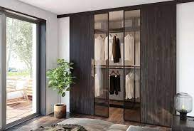
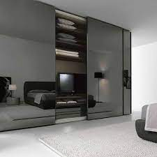
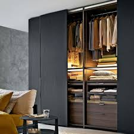
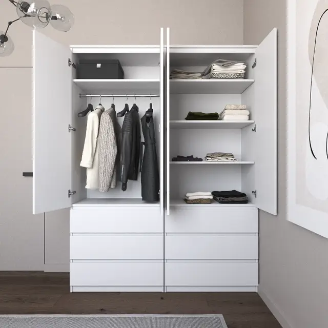

Шкафы
|  |
 |
 |
 |
| Шкаф "ПРЕМИУМ" |
Шкаф "Бьянко" |
Шкаф "Купе" |
Шкаф "Ноами" |
| 8960 грн |
12850 грн |
10780 грн |
9345 грн |
Что выбрать: шкаф купе или распашной шкаф?
Каждый выбирает подходящий вариант для себя. Распашной шкаф - модель,
которая открывается движением на себя и считается классикой. Шкаф купе - более современное изделие,
которое при открытии отодвигается в сторону.
У нас представлены оба варианты.
На главную